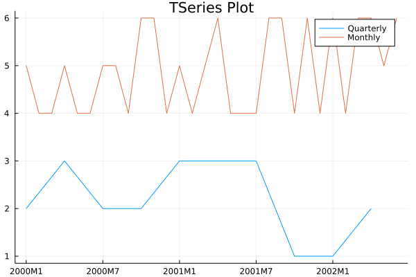

TimeSeriesEcon
All the code contained here is also available in this file: main.jl.
Part 1: MIT and TSeries
Initialize MITs and TSeries
MIT (Moment-in-Time) is a primitive type based on 64-bit signed integers that represents discrete dates. There are two ways to initialize MITs:
- (1) directly
2020M8, or - (2) using the functional form
mm(2020, 8).
Internally, MIT contains Frequency information - more on this in the next section.
julia> mit_integer = 2000U # ii(2000)2000Ujulia> mit_monthly = 2020M8 # mm(2020, 8)2020M8julia> mit_quarterly = 2020Q3 # qq(2020, 3)2020Q3julia> mit_yearly = 2020Y # yy(2020)2020Y
TSeries is subtype of AbstractVector and represents 1-dimensional time-series. A key feature of TSeries is the ability to use MITs as indices to get and set values.
TSeries converts all values to Float64. The automatic conversion feature might be changed in the future.
julia> series_monthly = TSeries(2020M1, rand(1:10, 6))6-element TSeries{Monthly,Int64} with range 2020M1:2020M6: 2020M1 : 5 2020M2 : 7 2020M3 : 10 2020M4 : 7 2020M5 : 2 2020M6 : 5
There are various ways to initialize TSeries - here, we provided an MIT that represents the first date in the series and a vector of random values.
As you can see, the frequency of MIT carries over to a TSeries instance.
Frequency
Every instance of MIT and TSeries is equipped with Frequency information, which is stored as a parameter.
julia> frequencyof(2020M8)Monthlyjulia> frequencyof(series_monthly)Monthly
As such, we can avoid performing operations on TSeries or MITs of different frequencies. Also, having Frequency parameter simplifies the retrieval of frequency specific information.
julia> year(2020M8)2020julia> period(2020M8)8julia> ppy(2020M8) # number of periods per year12
Part 2: Indexing using MITs
Access
Just as integers are used to index into Julia vectors, MITs are used to index into TSeries.
- Indexing using a single
MITreturns a float value associated with that date. - Indexing using a range of
MITs will return anotherTSeriesinstance
julia> series_monthly6-element TSeries{Monthly,Int64} with range 2020M1:2020M6: 2020M1 : 5 2020M2 : 7 2020M3 : 10 2020M4 : 7 2020M5 : 2 2020M6 : 5julia> series_monthly[2020M1]5julia> series_monthly[2020M1:2020M3]3-element TSeries{Monthly,Int64} with range 2020M1:2020M3: 2020M1 : 5 2020M2 : 7 2020M3 : 10
Assign
julia> series_monthly[2020M1] = -1;julia> series_monthly6-element TSeries{Monthly,Int64} with range 2020M1:2020M6: 2020M1 : -1 2020M2 : 7 2020M3 : 10 2020M4 : 7 2020M5 : 2 2020M6 : 5julia> series_monthly[2020M2:end] = -1;ERROR: ArgumentError: indexed assignment with a single value to many locations is not supported; perhaps use broadcasting `.=` instead?julia> series_monthly6-element TSeries{Monthly,Int64} with range 2020M1:2020M6: 2020M1 : -1 2020M2 : 7 2020M3 : 10 2020M4 : 7 2020M5 : 2 2020M6 : 5
You can also assign values outside of the bounds that were initially declared.
julia> series_monthly[end + 2] = -1;julia> series_monthly8-element TSeries{Monthly,Int64} with range 2020M1:2020M8: 2020M1 : -1 2020M2 : 7 2020M3 : 10 2020M4 : 7 2020M5 : 2 2020M6 : 5 2020M7 : 9223372036854775807 2020M8 : -1
Part 3: Plots and helpful functions
Plotting support
Using the Plots package, we can plot multiple TSeries with varying frequency.
julia> plot(TSeries(2000Q1, rand(1:3, 10)), TSeries(2000M1, rand(4:6, 30)), legend=true, title="TSeries Plot", label=["Quarterly" "Monthly"], size=(600, 400) );┌ Warning: Keyword argument xformatter not supported with Plots.GRBackend(). Choose from: Set([:top_margin, :group, :inset_subplots, :background_color, :ytickfontsize, :yforeground_color_text, :yguidefontcolor, :tickfontfamily, :show_empty_bins, :seriesalpha, :seriescolor, :ztick_direction, :xgrid, :ygridalpha, :zlims, :xtick_direction, :colorbar, :legend_font_family, :zflip, :ticks, :linealpha, :overwrite_figure, :arrow, :xguidefonthalign, :normalize, :linestyle, :xtickfontvalign, :xflip, :zgrid, :fillcolor, :ygrid, :bar_width, :colorbar_scale, :background_color_inside, :zguidefonthalign, :bins, :zguide, :zforeground_color_text, :legend_font_valign, :yscale, :legend_font_color, :weights, :xgridalpha, :ygridstyle, :clims, :xtickfontcolor, :fill_z, :xguide, :markershape, :background_color_subplot, :ztickfontfamily, :fillalpha, :markerstrokewidth, :tick_direction, :xguidefontvalign, :xguidefontfamily, :gridlinewidth, :foreground_color_subplot, :xgridlinewidth, :yguidefontsize, :foreground_color, :foreground_color_text, :titlefonthalign, :yerror, :x, :xtickfonthalign, :zgridlinewidth, :ytickfontrotation, :discrete_values, :ytick_direction, :grid, :xguidefontrotation, :ribbon, :xguidefontsize, :tickfontrotation, :xforeground_color_axis, :xdiscrete_values, :background_color_outside, :titlefontcolor, :xgridstyle, :line_z, :size, :orientation, :gridstyle, :projection, :markersize, :legend_foreground_color, :camera, :zguidefontrotation, :ydiscrete_values, :xforeground_color_grid, :seriestype, :yflip, :quiver, :zticks, :markerstrokecolor, :ztickfontrotation, :ztickfonthalign, :fillrange, :ztickfontvalign, :xlims, :xforeground_color_border, :markercolor, :xtickfontsize, :ylink, :levels, :color_palette, :connections, :yforeground_color_grid, :lims, :zgridstyle, :foreground_color_border, :zguidefontvalign, :xscale, :marker_z, :markerstrokealpha, :left_margin, :markeralpha, :legend_font_halign, :annotations, :window_title, :tickfontvalign, :foreground_color_axis, :zguidefontcolor, :ygridlinewidth, :zlink, :zscale, :smooth, :yguidefontrotation, :xticks, :guidefontsize, :zguidefontsize, :y, :margin, :ytickfontcolor, :zdiscrete_values, :tickfonthalign, :bottom_margin, :yforeground_color_border, :zguidefontfamily, :framestyle, :yguidefontvalign, :yguidefonthalign, :zerror, :zgridalpha, :ztickfontcolor, :scale, :legend_position, :linecolor, :html_output_format, :legend_title, :zforeground_color_border, :legend_font_pointsize, :title, :tickfontcolor, :subplot_index, :flip, :titlefontrotation, :legend_background_color, :tickfontsize, :titlefontvalign, :z, :yforeground_color_axis, :foreground_color_grid, :xtickfontrotation, :linewidth, :z_order, :ztickfontsize, :gridalpha, :xerror, :guidefontfamily, :ylims, :contour_labels, :xguidefontcolor, :primary, :xtickfontfamily, :ytickfontvalign, :guidefonthalign, :ytickfontfamily, :aspect_ratio, :xforeground_color_text, :show, :link, :colorbar_title, :guidefontrotation, :subplot, :label, :ytickfonthalign, :guide, :guidefontcolor, :yguide, :titlefontsize, :titlefontfamily, :guidefontvalign, :zforeground_color_axis, :zforeground_color_grid, :layout, :legend_font_rotation, :colorbar_entry, :yguidefontfamily, :polar, :right_margin, :xlink, :series_annotations, :yticks]) └ @ Plots ~/.julia/packages/Plots/8K4be/src/args.jl:1628

Conversions
Note that support for frequency conversions is under development.
julia> tsmonthly = TSeries(2020M1, collect(Float64, 1:12))12-element TSeries{Monthly} with range 2020M1:2020M12: 2020M1 : 1.0 2020M2 : 2.0 2020M3 : 3.0 2020M4 : 4.0 2020M5 : 5.0 2020M6 : 6.0 2020M7 : 7.0 2020M8 : 8.0 2020M9 : 9.0 2020M10 : 10.0 2020M11 : 11.0 2020M12 : 12.0julia> # Monthly -> Quarterly (high to low by mean (default method)) tsquarterly = fconvert(Quarterly, tsmonthly)4-element TSeries{Quarterly} with range 2020Q1:2020Q4: 2020Q1 : 2.0 2020Q2 : 5.0 2020Q3 : 8.0 2020Q4 : 11.0julia> # Monthly -> Quarterly (high to low by sum) fconvert(Quarterly, tsmonthly; method = :sum)4-element TSeries{Quarterly} with range 2020Q1:2020Q4: 2020Q1 : 6.0 2020Q2 : 15.0 2020Q3 : 24.0 2020Q4 : 33.0julia> # Monthly -> Quarterly (high to low by first value) fconvert(Quarterly, tsmonthly; method = :begin)4-element TSeries{Quarterly} with range 2020Q1:2020Q4: 2020Q1 : 1.0 2020Q2 : 4.0 2020Q3 : 7.0 2020Q4 : 10.0julia> # Monthly -> Quarterly (high to low by last value) fconvert(Quarterly, tsmonthly; method = :end)4-element TSeries{Quarterly} with range 2020Q1:2020Q4: 2020Q1 : 3.0 2020Q2 : 6.0 2020Q3 : 9.0 2020Q4 : 12.0julia> # Quarterly -> Monthly (low to high by piecewise-constant) fconvert(Monthly, tsquarterly)12-element TSeries{Monthly} with range 2020M1:2020M12: 2020M1 : 2.0 2020M2 : 2.0 2020M3 : 2.0 2020M4 : 5.0 2020M5 : 5.0 2020M6 : 5.0 2020M7 : 8.0 2020M8 : 8.0 2020M9 : 8.0 2020M10 : 11.0 2020M11 : 11.0 2020M12 : 11.0